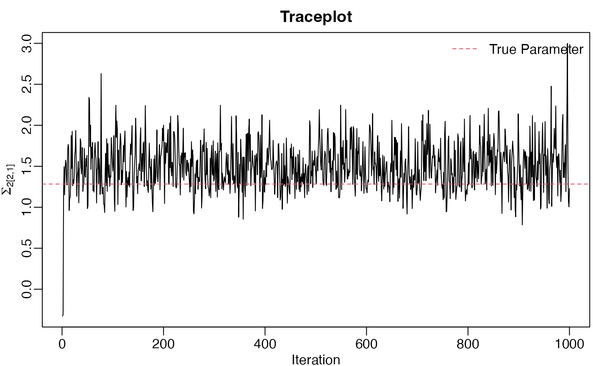

Equivariant Estimation of Kronecker Structured Covariance Matrices
David Gerard
2017-07-12
Abstract.
This Vignette demonstrates using the equivariant estimation procedures in the R package tensr. We will simulate some data then explore the performance differences between the uniformly minimum risk equivariant estimator (UMREE), the maximum likelihood estimator (MLE), multiway Takemura’s estimator, and a moment based estimator. Then we will demonstrate extracting posterior summaries. Finally, we will demonstrate the equivariance of the Bayes rule.
Comparison of Methods.
First, we generate a data array \(X\) of dimension \(10 \times 10 \times 10\). Each mode of \(X\) will have an AR-1(0.7) covariance structure. That is \(\text{cov}(\text{vec}(X)) = \Sigma_3 \otimes \Sigma_2 \otimes \Sigma_1\), where \(\text{vec}(\cdot)\) is the same think as c in R and just “vectorizes” \(X\), and “\(\otimes\)” is the Kronecker product. Hence \(\Sigma_{i,j} = 0.7^{|i - j|}\).
set.seed(360)
p <- c(10, 10, 10) #Dimension of tensor.
n <- length(p) #Order of the tensor.
cov_list <- list()
normalized_cov_list <- list() #Same as cov_list, but scaled down to determinant 1.
sig2_total <- 1
rho <- 0.7
for (mode_index in 1:n) {
cov_list[[mode_index]] <-
rho ^ abs(outer(1:p[mode_index], 1:p[mode_index], "-"))
scale_cov <- det(cov_list[[mode_index]]) ^ (1 / p[mode_index])
sig2_total <- sig2_total * scale_cov
normalized_cov_list[[mode_index]] <- cov_list[[mode_index]] / scale_cov
}
##Generate data with above covariance structure.
X <- atrans(array(rnorm(prod(p)), dim = p), lapply(cov_list, mhalf))To get the UMREE, we first apply the function equi_mcmc. This will give us posterior draws of the inverse of the lower-triangular Cholesky square root of each component covariance matrix. This is with respect to using the right Haar measure over a product group of lower-triangular matrices as our prior. Using the output from equi_mcmc, we apply the function get_equi_bayes to obtain the Bayes rule under multiway Stein’s loss.
mcmc_out <- equi_mcmc(X, 1000)
bayes_rule <- get_equi_bayes(mcmc_out$Phi_inv, mcmc_out$sigma)
cov_umree <- bayes_rule$Sig_hat
#Estimate of the "standard deviation" form for the total variation parameter.
sig_umree <- bayes_rule$b We can improve on the UMREE by calculating UMREEs for different rotations of the data array, then “average” these UMREEs. The more averagings the better in terms of statistical risk. This estimator is called multiway Takemura’s estimator.
tak_est <- multiway_takemura(X, ortho_max = 3, print_mcmc = TRUE)## Number of averagings = 1
## Number of averagings = 2
## Number of averagings = 3cov_takemura <- tak_est$B
sig_takemura <- tak_est$bWe use holq to obtain the MLE for comparison. The output of holq is fed into mle_from_holq to obtain the MLEs of each component covariance matrix.
holq_x <- holq(X, print_diff = FALSE)
mle_x <- mle_from_holq(holq_x)
cov_mle <- mle_x$cov_mle
#The "standard deviation" form for the total variation parameter.
sig_mle <- mle_x$sig_mle We also obtain a “moment-based” estimator for comparison. These are just the sample covariance matrices of each mode, scaled down to have unit determinant. The estimate of the total variation parameter is the MLE conditional on the component covariance matrices. This is not implemented in tensr because it performs poorly.
get_moment <- function(X) {
p <- dim(X)
n <- length(p)
cov_moment <- list()
cov_chol_inv <- list() ## used for getting scale est
for (mode_index in 1:n) {
cov_temp <- mat(X, mode_index) %*% t(mat(X, mode_index))
cov_moment[[mode_index]] <- cov_temp/(det(cov_temp)^(1/p[mode_index]))
cov_chol_inv[[mode_index]] <- t(backsolve(chol(cov_moment[[mode_index]]),
diag(p[mode_index])))
}
sig_moment <- sqrt(sum(atrans(X, cov_chol_inv)^2)/prod(p))
return(list(cov_moment = cov_moment, sig_moment = sig_moment))
}
moment_x <- get_moment(X)
cov_moment <- moment_x$cov_moment
sig_moment <- moment_x$sig_momentWe can now compare the multiway Stein’s losses for each of the estimators using multi_stein_loss_cov. The risk performance should be, in decreasing order of performance, multiway Takemura’s estimator, UMREE, MLE, moment. Of course, for any individual realization, the loss ordering may be different.
umree_loss <- multi_stein_loss_cov(cov_umree, normalized_cov_list, sig_umree, sqrt(sig2_total))
tak_loss <- multi_stein_loss_cov(cov_takemura, normalized_cov_list, sig_takemura,
sqrt(sig2_total))
mle_loss <- multi_stein_loss_cov(cov_mle, normalized_cov_list, sig_mle, sqrt(sig2_total))
moment_loss <- multi_stein_loss_cov(cov_moment, normalized_cov_list, sig_moment,
sqrt(sig2_total))
cat(
"Multiway Takemura's Loss:", round(tak_loss), "\n",
" UMREE Loss:", round(umree_loss), "\n",
" MLE Loss:", round(mle_loss), "\n",
" Moment Loss:", round(moment_loss), "\n"
)## Multiway Takemura's Loss: 206
## UMREE Loss: 209
## MLE Loss: 235
## Moment Loss: 3631Posterior Summaries
You can also get the samples from the posterior if you want to perform a fully Bayesian analysis. Just insert the output of equi_bayes into convert_cov to get these posterior samples.
cov_post <- convert_cov(mcmc_out) cov_post[[2]] contains the posterior samples of the total variation parameter. cov_post[[1]][[i]][,,j] contains the \(j\)th posterior sample of the \(i\)th component covariance matrix. Here are some trace plots of the posterior samples.
par(cex.axis = 1, cex.lab = 1, cex.axis = 1, mar = c(2.4,2.6,2,0.2), mgp = c(1.5,0.5,0))
## trace plot of total variation parameter
plot(cov_post[[2]], type = "l", ylab = expression(sigma^2),
xlab = "Iteration", main = "Trace Plot")
abline(h = sig2_total, lty = 2, col = 2)
legend("topright", "True Parameter", lty = 2, col = 2, bty = "n")
## some more trace plots
random_trace <- function(cov_post, true_cov, p) {
n <- length(p)
mode_look <- sample(1:n, 1)
x_look <- sample(1:p[mode_look], size = 1)
y_look <- sample(1:p[mode_look], size = 1)
plot(cov_post[[1]][[mode_look]][x_look, y_look, ], type = "l",
xlab = "Iteration",
ylab = bquote(Sigma[.(mode_look)]["["][.(x_look)][","][.(y_look)]["]"]),
main = "Traceplot")
abline(h = true_cov[[mode_look]][x_look, y_look], lty = 2, col = 2)
legend("topright", "True Parameter", lty = 2, col = 2, bty = "n")
}
for(index in 1:4){
random_trace(cov_post, normalized_cov_list, p)
}


Here are the 95% posterior credible intervals of the covariance parameters, sorted in lexicographical ordering of the row and column indices.
par(cex.axis = 1, cex.lab = 1, cex.axis = 1, mar = c(2.4,2.6,2,0.2), mgp = c(1.5,0.5,0))
quantile_list <- list()
for (mode_index in 1:n) {
quantile_list[[mode_index]] <- apply(cov_post[[1]][[mode_index]], c(1, 2), quantile,
probs = c(0.025, 0.5, 0.975))
}
par(cex.main = 0.7)
for (mode_index in 1:n) {
upper_val <- c(quantile_list[[mode_index]][3, , ][lower.tri(diag(p[mode_index]),
diag = TRUE)])
lower_val <- c(quantile_list[[mode_index]][1, , ][lower.tri(diag(p[mode_index]),
diag = TRUE)])
median_val <- c(quantile_list[[mode_index]][2, , ][lower.tri(diag(p[mode_index]),
diag = TRUE)])
num_cred <- p[mode_index] * (p[mode_index] + 1)/2
plot(c(), xlim = c(1, num_cred), ylim = c(min(lower_val), max(upper_val)),
xaxt = "n",
xlab = "Parameter", ylab = "Value",
main = substitute(z~~Sigma[y],
list(z = "Medians and 95% Credible Intervals for",
y = mode_index)))
arrows(1:num_cred, lower_val, 1:num_cred, upper_val, length = 0)
points(1:num_cred, median_val, pch = 16, col = 2, cex = 0.4)
points(1:num_cred, median_val, pch = 1, col = 1, cex = 0.4)
abline(h = 0, lty = 2, col = 2)
v_at <- cumsum(p[mode_index]:2) + 0.5
abline(v = v_at, lty = 2)
}

Demonstrate Equivariance
We finish with a small example of how the UMREE is equivariant. First, we generate a group element of a product group of lower triangular matrices.
A_list <- list()
for (mode_index in 1:n) {
A_temp <- matrix(0, nrow = p[mode_index], ncol = p[mode_index])
A_temp[lower.tri(A_temp)] <- rnorm(p[mode_index] * (p[mode_index] - 1)/2)
diag(A_temp) <- rgamma(p[mode_index], shape = 1, rate = 1)
A_temp <- A_temp/prod(diag(A_temp))^(1/p[mode_index])
A_list[[mode_index]] <- A_temp
}
a_scale <- 10Now we transform X.
X_transformed <- a_scale * atrans(X, A_list)Now we get the UMREEs of the original and the transformed data.
mcmc_out <- equi_mcmc(X, 10000)
bayes_rule <- get_equi_bayes(mcmc_out$Phi_inv, mcmc_out$sigma)
cov_x <- bayes_rule$Sig_hat
sig_x <- bayes_rule$b
mcmc_out <- equi_mcmc(X_transformed, 10000)
bayes_rule <- get_equi_bayes(mcmc_out$Phi_inv, mcmc_out$sigma)
cov_x_t <- bayes_rule$Sig_hat
sig_x_t <- bayes_rule$bThe UMREE of transformed data should equal the transformed UMREE of original data.
#These two quantities should be close.
cat(" Total Variation of transformed data:", sig_x_t, "\n",
"Transformation of total variation of original data:", sig_x * a_scale,
"\n")## Total Variation of transformed data: 3.906237
## Transformation of total variation of original data: 3.905766for (mode_index in 1:n) {
par(ask = TRUE)
x_val <- cov_x_t[[mode_index]][lower.tri(diag(p[mode_index]))]
y_val <- (A_list[[mode_index]] %*% cov_x[[mode_index]] %*%
t(A_list[[mode_index]]))[lower.tri(diag(p[mode_index]))]
plot(x_val, y_val, xlab = "Transform of UMREE",
ylab = "UMREE of Transformed Data",
main = "Covariance Estimates")
mtext("(Should Lie on Line if Equivariant)")
abline(c(0, 1))
par(ask = FALSE)
}